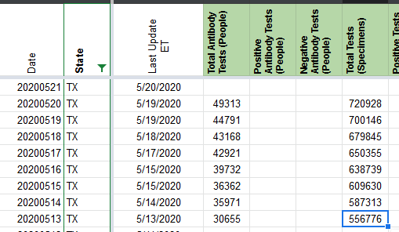
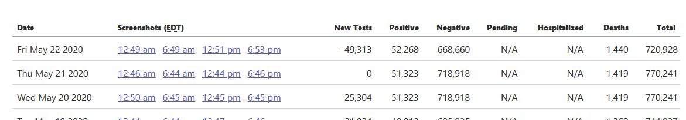
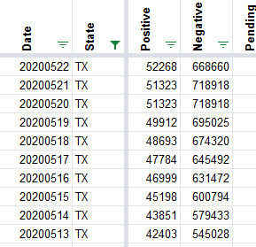
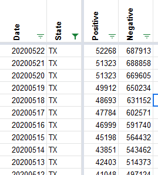
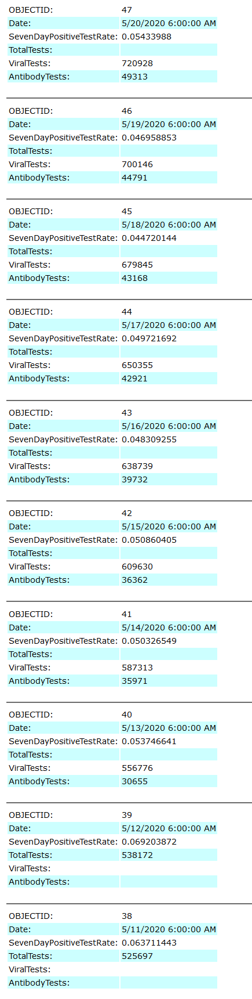

TX is providing separated serology & PCR tests as of 5/13
Issue number 442
muamichali opened this issue on May 22, 2020 at 11:47 am
Labels Historical Data not stale
Update historical data to reflect
Thanks, https://github.com/space-buzzer for the query
Comments
I added the data into the new columns. We still need to make sure that the totals in columns pos and neg are matching this though

I came here to submit an issue but it was already in the works :-)
There is a daily published file here: https://www.dshs.state.tx.us/coronavirus/TexasCOVID19CaseCountData.xlsx
The tab Tests by day contains the same information.
I have an archive of this Excel workbook since May 7 and can provide it if it is helpful.
Thanks, Kevin for letting us know about the file! If you have the history of positive anti body tests from the files you saved we can plug those into our data, because it looks like only cumulative positives are provided for the serology tests.
OK, let me see if I can dig out the old versions.
This issue is still open because we need to patch the total number of tests we remove. Right now TX is showing negative tests because we didn’t do that yet.

BEFORE 
AFTER 
@muamichali , here is a ZIP file containing all of the daily files from 5-12 to 5-22:
Thanks, Kevin!
@muamichali , here is a ZIP file containing all of the daily files from 5-12 to 5-22:
It could be that the best file to use is 5-22. I am not clear on what the positivity rate refers to. It could be the positivity rate for that day (hopefully) or the positivity rate cumulative.
Hi folks, I just checked out the Texas page, but it looks like one number is likely not correct:
https://covidtracking.com/data/state/texas
The negative number is 687,913 for both May 21 and May 22, which is unlikely to stay the same for a large state.
I appreciate all the work that y’all do. Let me know if I can be of help.
HI @kevinp2 Let me re-open the ticket and look at your comment. Sorry I missed it.
Also, do you happen to have the XLS from 5/30 saved? We need to start those XLS files too it seems.
Hi @muamichali , I’ve attached the file for 5/30.
TexasCOVID19CaseCountData-2020-05-30T200023.xlsx
Thank you so much!!
Hi @muamichali ,
Unfortunately, it looks like there is still a big mismatch. The last correct date when both CovidTracking and TX DSHS matched was on 5/21. I have attached an Excel file where I lined up Covid Tracking and TX DSHS numbers and colored them. It should be self-explanatory, but please let me know if you need more help.
You will see on the sheet Covid Tracking:
- On May 22, there is a discrepancy
- On May 23, there is a BLANK. DSHS did not report a number for that date in their Excel file.
- May 24, there is a discrepancy.
- May 25 onwards, the CovidTracking number is what DSHS reported for the previous day and this continues to the present day.
Possible resolution: I would suggest that since TX DSHS left blank entries for 5/23 and also for their positivity rate on 5/30, that Covid Tracking should also simply leave those blank as well. TX DSHS is the ultimate owner of the data. CovidTracking vs TX DSHS.xlsx
Hi Kevin, Sorry, I an just seeing this. I will re-open the issue and we will look into this on Monday.
This issue has been automatically marked as stale because it has not had recent activity. It will be closed if no further activity occurs. Thank you for your contributions!
This issue has been closed because it was stale for 15 days, and there was no further activity on it for 10 days. You can feel free to re-open it if the issue is important, and label it as “not stale.”
@kevinp2 Hi Kevin, Are you still archiving TexasCOVID19CaseCountData.xlsx? I’m looking for a timeline of cases in texas by age.
@kevinp2 Hi Kevin, Are you still archiving TexasCOVID19CaseCountData.xlsx? I’m looking for a timeline of cases in texas by age.
Hi @Swebask , I started my archive on 5/8/20 and I have attached it here. I hope it helps.
TexasCOVID19CaseCountDataArchive.zip
The Zip contains the files with the timestamp in the name.
I am also interested in the timeline of changing ages and perhaps you can let me know what you find.
